Hirogawa, Wakayama: things to do, food and stays
Hirogawa · Wakayama
Hirogawa
Highlighted on the Wakayama map.
Stay
いさり
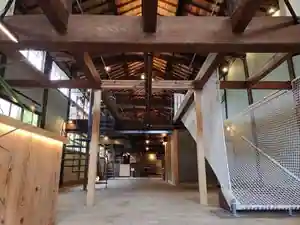
Isari
滝原温泉ほたるの湯
Takihara Onsen Hotaruno Yu
Inn at Takihara Onsen in Shimotsuki, Hirogawa.
Dining
つかさ
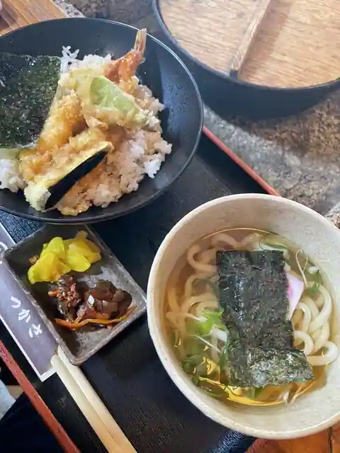
Tsukasa
ラーメン場鶴
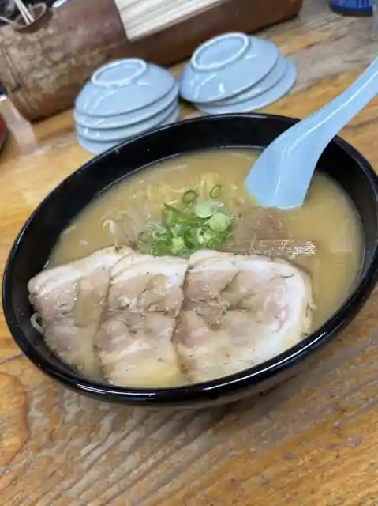
Ramen Ba Tsuru
麺処むらなか
Men Tokoro Muranaka
お食事処 ほたる
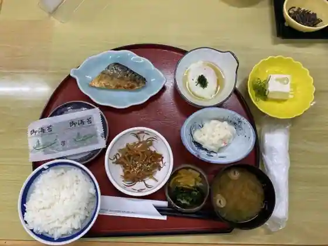
O Shokuji Tokoro Hotaru
潮香
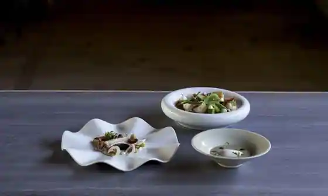
Choko
川合食堂
Kawai Shokudo
桜蓮
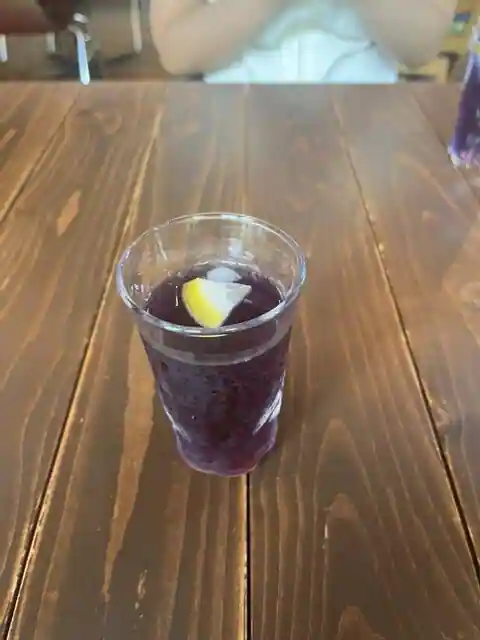
Sakura Hasu
Surya nadi
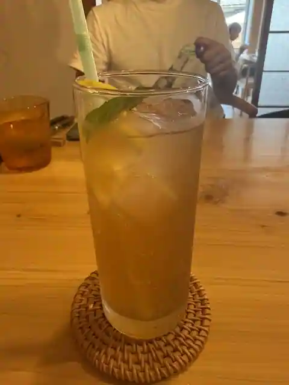
Surya nadi
munini
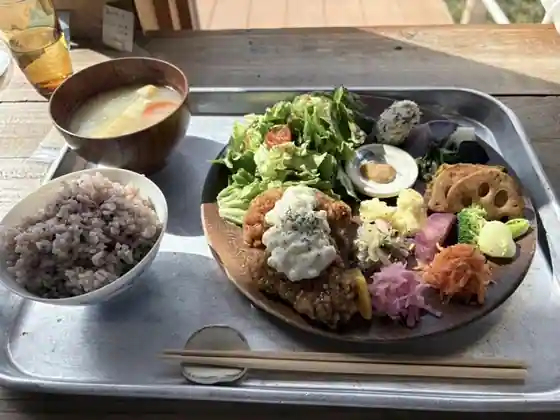
munini
湯浅キッチン
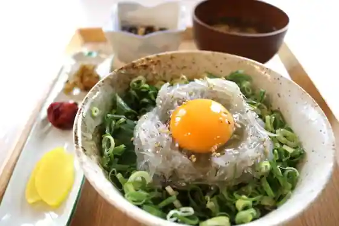
Yuasa Kitchen
Beach Bum
Beach Bum
Nico Boo
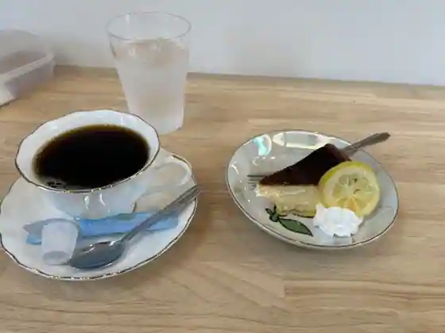
Nico Boo
うちごはん 仁
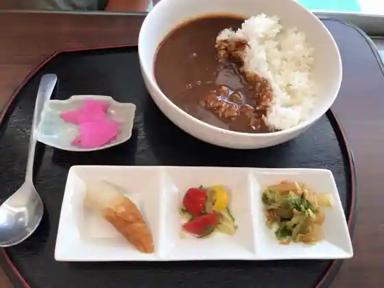
Uchigohan Hitoshi
ケイマーケット広川
Keimaketto Hirokawa
コテリ
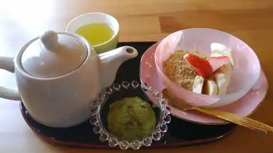
Koteri
ボートカフェ ベイサイド
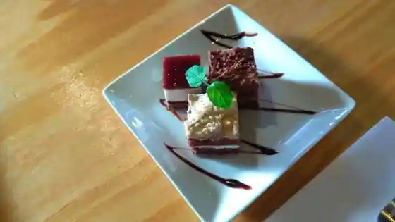
Boto Cafe Beisaido
ponte
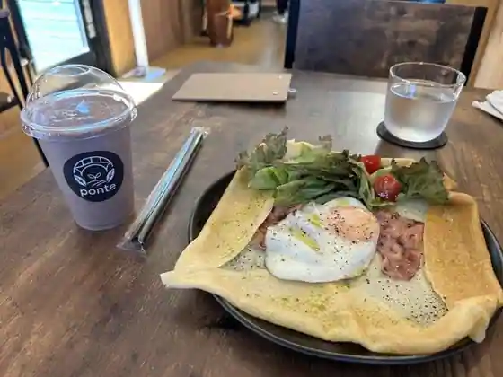
ponte
シーサイド唐尾
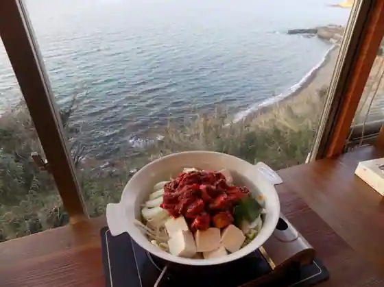
Shisaido To O
Sights
Ine Mura no Hi no Kan
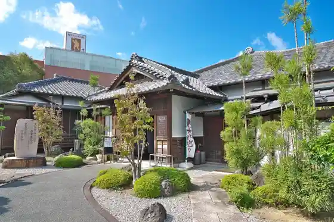
GT WAN PARK
Nishihiro Coast
GT HOUSE
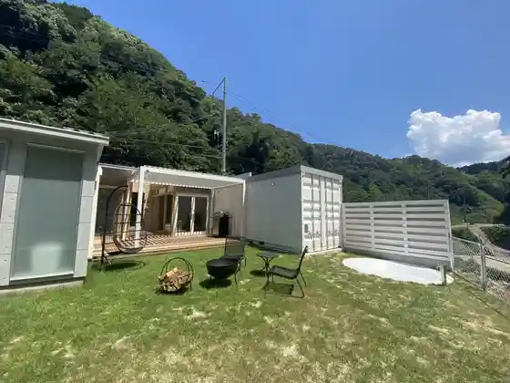
Ko Hachiman Shrine
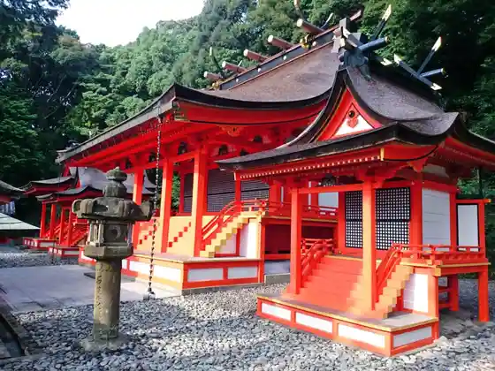